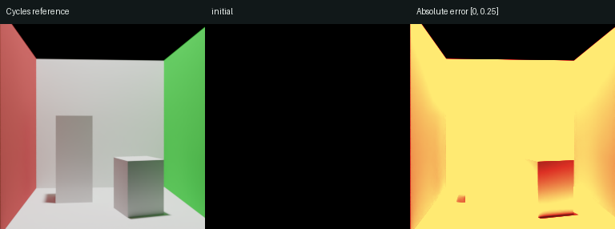
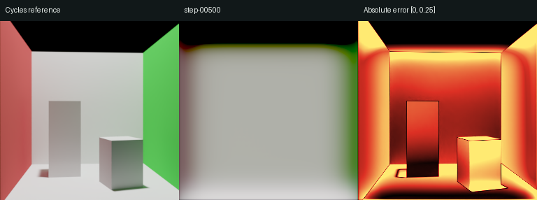
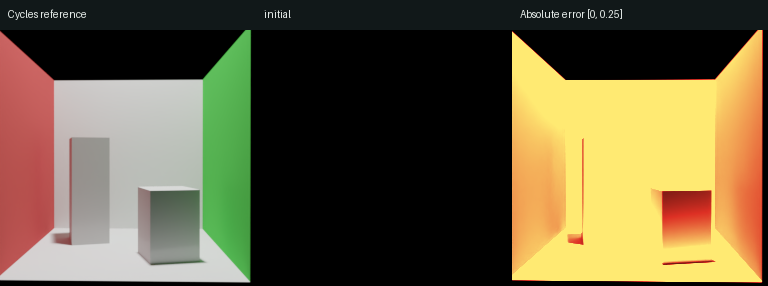
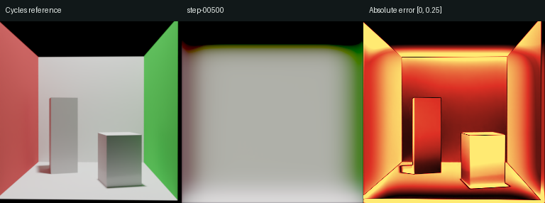
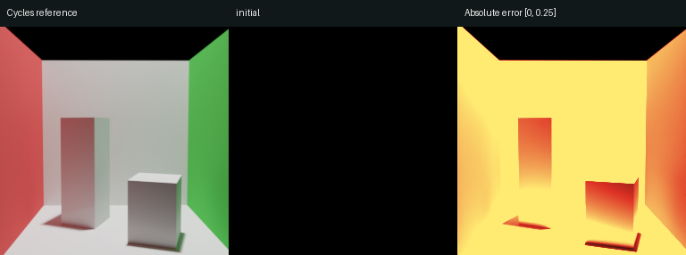
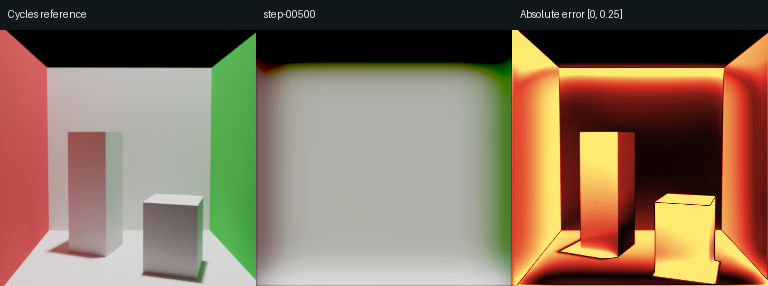
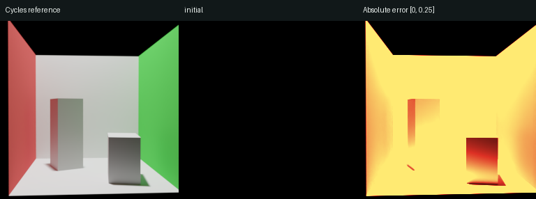
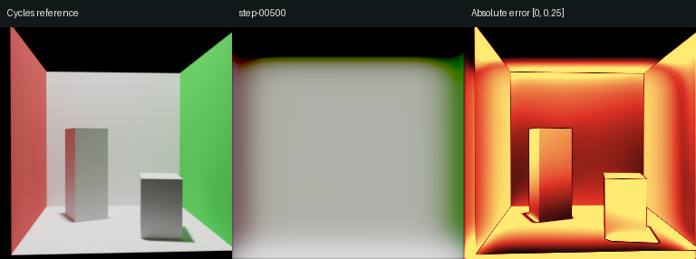

Cornell 场景族训练记录
作者 RF1 公开代码；从头初始化；256×256；4 张 RTX 2080 Ti；每步 4 个场景样本、8 张图像。
状态：training；最近日志记录 781 次更新。初始预算 30,000 步。
验证结果
32 个完整配置、128 张图像。按配置留出；此页没有使用测试集。PSNR / SSIM 在 Reinhard 线性 RGB 上计算，data_range=1。梯度 L1 衡量相邻像素差分的偏差，越低越好。
| 模型 / 步数 | 图像数 | PSNR / dB | SSIM | 梯度 L1 |
|---|
| initial | 128 | 8.11 | 0.1269 | 0.00602 |
| pretrained | 128 | 8.63 | 0.2251 | 0.00622 |
| step-00500 | 128 | 14.59 | 0.6286 | 0.00812 |
initial 为本次随机初始化；pretrained 为固定官方权重。课程训练采用缩减批量与训练预算，不等同于论文完整规模复现。
当前梯度误差尚未优于初始化；像素指标的改善不足以证明物体结构已恢复，仍需继续训练并检查固定区域的边缘与形状。
训练损失

validation_0000 · 视角 0

initial：参考 / 预测 / 绝对误差
step-00500：参考 / 预测 / 绝对误差validation_0008 · 视角 0

initial：参考 / 预测 / 绝对误差
step-00500：参考 / 预测 / 绝对误差validation_0016 · 视角 0

initial：参考 / 预测 / 绝对误差
step-00500：参考 / 预测 / 绝对误差validation_0024 · 视角 0

initial：参考 / 预测 / 绝对误差
step-00500：参考 / 预测 / 绝对误差对照条件
所有图统一使用 EV0、Reinhard 和 sRGB；绝对误差色标固定为 [0, 0.25]。四个展示配置在训练前选定，均取视角 0，不按结果筛选。
验证集用于选检查点。最终测试及结构细节检查完成后，才写最终效果结论。受限 Cornell 场景族的结果不代表原生 Sponza 等复杂场景能力。